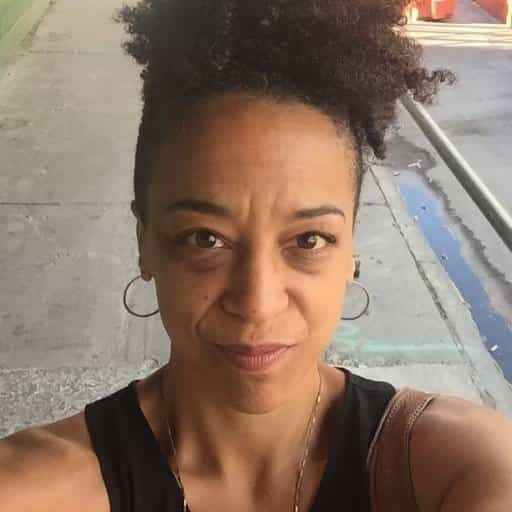

An ex-producer for fired television presenter Charlie Rose has complained that she was not “sexually harassed” by him due to “racism.” Currently, there is next to no evidence that Rose actually mistreated women. The more likely outcome is that he engaged in consensual flings and affairs with women who then opportunistically turned on him after the putrid #MeToo campaign started.
And while many of us on staff were subject to Charlie’s unsolicited shoulder massages and physical intimidation, as he towered above us at a height over six feet tall, the women Charlie preferred and preyed upon—at least that I witnessed—were white. It was an environment that all but erased me, while simultaneously exploiting me as a black woman.
— Rebecca Carroll telling a truly woeful tale of how Charlie Rose didn’t “sexually harass” her, supposedly because she was black
Rebecca Carroll, who described her so-called experiences as “the only black journalist on staff” for Charlie Rose’s eponymous show, very egotistically positions herself in Esquire as someone who should have been sexually harassed but wasn’t. You be the judge as to how attractive she is:

Naturally, once she pitifully establishes her narrative as a victim of made-up racism, she feigns solidarity with the white women Rose is said to have (again, with no evidence) sexually harassed:
To be clear, I’m not suggesting it would have been preferable for Charlie to have preyed upon me, too—but rather, his sexualization of white women was a manifestation of gendered power dynamics in the same way that his not sexualizing me was an expression of racialized power dynamics.
Most interestingly of all, Rebecca Carroll says female colleagues were “preyed upon” without ever mentioning how she might have confronted Charlie Rose about this purported behavior. Consequently, she only seems to be “brave” and stand up for fellow women when publications like Esquire give her a chance to write about herself to an international audience, years after the “predatory” antics of Rose. How very sisterly of her.
Hilariously, Carroll whinges that she was “erased” as she did not receive sexual attention from Charlie Rose. Despite the extreme doubts we should all have about these sexual harassment allegations involving other women, not being sexually harassed by a famous television presenter is enough at the moment for someone to be massively triggered.
If this is what “racism” is, then we’re all inveterate racists

Using already atrocious leftist standards, Carroll’s allegations of racism against Charlie Rose are spectacularly flimsy and tenuous, including this abysmal gripe:
His language around race felt consistently coded. Charlie demanded I book the black guests he wanted but previously had been unable to get—black guests of a perceived level of respectability and intelligence (Sidney Poitier)—while dismissing the black guests I pitched, (Vivica Fox, for example).
Because Charlie Rose did not want to book Vivica A. Fox, best known to audiences as Will Smith’s stripper fiancée in Independence Day and Vernita Green in Kill Bill, he is apparently a “coded” racist. If you do not like older films, nonetheless try comparing Sidney Poitier’s performance in Lilies of the Field, his magnum opus, with Fox’s turn as a sex worker in a blockbuster about highly belligerent invading aliens. A putative refusal to want to interview the latter individual now meets the threshold for being called a racist in the America of 2017. In fact, Carroll’s cries of bigotry regarding the Vivica A. Fox rejection is comparable to calling someone anti-Semitic for not liking Michael Bay’s Transformers franchise.
The most cursory glance at PBS’ viewer demographics reveals an older audience, one more receptive to someone like Sidney Poitier. If this were not the case, Rebecca Carroll would still have us believe that her boss’ reluctance to share the same opinion as her about potential guests on his show is an indication of his racism. “You prefer this black guest and I prefer this black guest, so you’re a racist, Charlie!” is the sum total of this particular part of her argument.
Again, Rebecca Carroll was not willing to have a serious argument with Charlie Rose at the time about the way she claims he sexually treated women, but she did kick up a stink about whether Vivica A. Fox could be a guest on Charlie Rose. Go figure.
The end result of social and political insanity
“I was not sexually harassed” is now a status used for virtue signaling alongside “I was sexually harassed.”
No one should be surprised that an evidently attention-starved woman has written a bizarre rant like Rebecca Carroll’s for Esquire. After all, multimillionaire blacks are oppressed, while poor whites on minimum wage just don’t know how privileged they are. Prepubescent boys can’t vote, drive, drink alcohol, or have sex (and rightfully so), yet they can get their dicks chopped off to become “girls.” We could go on and on.
Clinging onto pseudo-victim status has become such a sport in feminized America that women who are otherwise unable to scream “sexual harassment” or “rape” can instead declare that not being a victim makes them a victim of another kind. It’s an equally ingratiating method of virtue signaling deployed to show how “brave” and “strong” a woman is, except this time they’re meant to be brave and strong for putting up with not being sexually harassed. So you weren’t groped or raped? Well, the guy facing allegations from others must be a racist, too. Or, if you’re a man who pretends to be a woman, he must be transphobic.
Is it any wonder that Roosh’s books about men leaving the West for greener pastures in South America or Eastern Europe continue to sell?
Read More: White American Girl Raises Over $30,000 Because Her Dad Is “Racist” Against Black Boyfriend